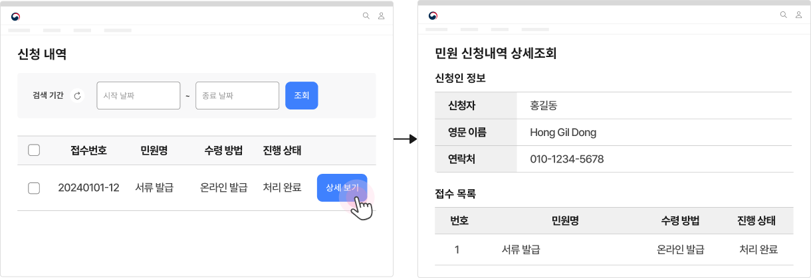
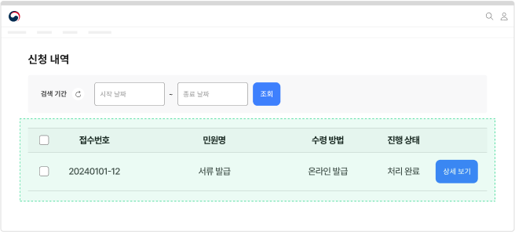
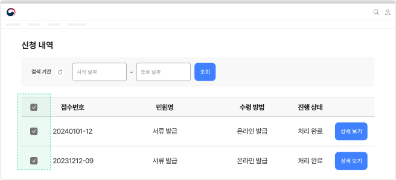

서비스 패턴 신청신청 결과 확인
신청은 사용자가 서비스 제공 기관에 요구 사항을 알리기 위해 서식을 작성하는 과업으로 관련 법률에 명시된 종류의 민원 외에 사용자가 특정한 내용을 요청하는 모든 행동을 포함한다.
구조
- 1. 필터링·정렬 컨트롤: 신청 내역 목록을 필터링·정렬하는 데 사용되는 컨트롤
- 2. 페이지네이션: 신청 내역 목록을 탐색하는 데 사용되는 컨트롤
- 3. 제목: 신청 서비스명을 보여주는 텍스트. 상세 화면으로 이동하기 위한 링크 또는 신청 이력 화면으로 이동하기 위한 링크로 사용됨
-
4. 메타 데이터:
신청 서비스에 부여된 여러 데이터 속성을 표시하는 텍스트로 다음 내용이 제공될 수 있음
a. 신청일/취소일
b. 신청 처리 절차/현재 진행 상태 -
5. 액션 버튼:
각 신청 내역 항목에 대해 수행할 수 있는 기능 사용을 유도하기 위한 컨트롤을 제공함
a. 인쇄/저장
b. 신청 취소
사용성 가이드라인
-
신청 결과 확인 화면으로 이동하는 링크 레이블에 직관적인 명칭을 사용한다.
권장
신청 결과 확인 화면으로 이동하는 링크 레이블은 사용자에게 익숙하며 단어를 통해 목적지에 대해 유추할 수 있는 ’신청 현황’, ‘신청 내역’으로 제공한다.
디지털 서비스의 브랜드나 서비스 특징을 고려한 이름을 제공하고자 하는 경우, 인라인 텍스트 설명이나 툴팁으로 부가적인 정보를 제공하는 것이 바람직하다. -
신청 내역을 제공한다.
필수
각 신청 건에 대해 신청서 작성 양식의 모든 항목과 각 항목에 사용자가 입력한 정보를 확인할 수 있는 내역 정보를 제공하여 사용자가 신청 현황과 조건을 확인할 수 있도록 해야 한다.
신청서에 작성한 내용을 기반으로 문서가 발급되는 경우 내역 정보는 문서로 대체할 수 있으나 문서에 포함되지 않은 정보에 대해서는 별도로 정보를 제공해야 한다.[모범 사례]
 -
신청 이력을 제공한다.
필수
사용자가 이용한 신청 서비스의 이력 목록을 제공하여 사용자가 과거의 신청 사항을 조회할 수 있도록 해야 한다. 신청 이력의 제공 기간은 서비스 특성이나 사용자 인증 방식에 적합한 수준으로 제공하면 된다.
[모범 사례]
 -
신청 이력을 알기 쉽게 구조화한다.
권장
여러 건의 신청 내역이 있을 경우, 표나 목록으로 구조화하여 알기 쉽게 표현한다.
[모범 사례]

-
정렬 기능을 제공한다.
권장
내역을 신청일자, 중요도, 마감기한 등의 기준으로 정렬하여 중요한 내용을 먼저 확인할 수 있게 만든다.
-
신청 처리 절차 및 현재 진행 상태에 대한 정보를 제공한다.
필수
처리 단계 전체를 명시하고 현재의 진행 단계가 어디에 속하는지를 표시하여 사용자가 신청 서비스의 처리 현황과 다음 단계를 예측할 수 있어야 한다. 처리 절차와 단계 정보가 제공되지 않으면 사용자는 서비스를 신뢰하기 어렵고 불안을 느낄 수 있다.
-
일괄 선택 기능을 제공한다.
권장
일괄 선택 기능은 사용자가 여러 건의 신청 내역에 같은 동작을 여러 번 반복하지 않고 필요한 작업을 빠르게 수행하도록 돕는다.
[모범 사례]
 -
신청 취소 버튼을 명확하게 표현한다. 권장
신청 상태를 변경하고자 하는 사용자가 원하는 목표를 빠르게 달성할 수 있도록, 신청 취소 버튼을 인지하기 쉽게 만든다.
접근성 가이드라인
-
신청 내역 선택에 사용되는 체크박스에 적절한 레이블을 제공한다.
신청 내역 선택에 사용되는 여러 개의 체크박스가 동일한 레이블을 갖거나 레이블 내용을 적절하지 않게 제공하면, 보조 기술 사용자는 어떤 신청 건을 선택하는지 알 수 없으므로 예약명, 예약번호 등의 명확한 신청 정보를 레이블로 제공해야 한다.
- KWCAG 2.2 레이블 제공
- WCAG 2.1 Labels or Instructions (A)
- WCAG 2.1 Headings and Labels (AA)
관련 구성 요소
컴포넌트
기본 패턴
마크업 예시
| 1Depth | 2Depth | File Link |
|---|---|---|
| 서비스 신청 | 신청완료 | html 화면 확인하기 |